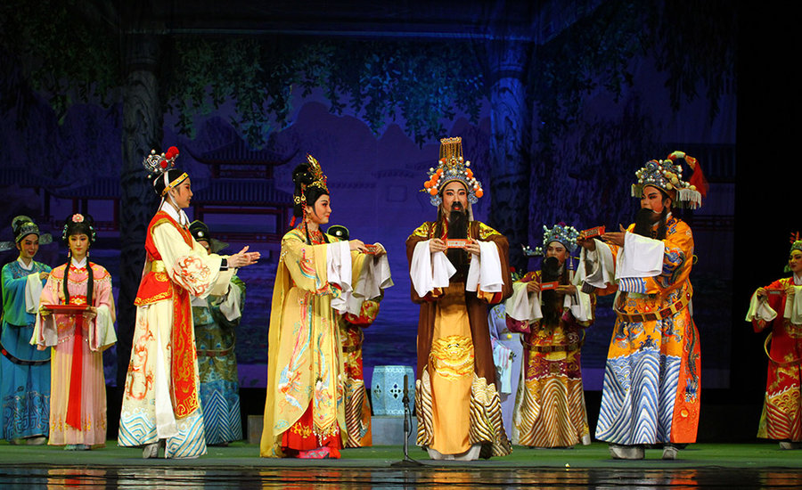

传统文化
-

普宁英歌
英歌是普宁民间广为流传的一种民间舞蹈样式，迄今也有三百多年的历史，它被认为是扬正压邪、吉祥平安的象征，深受群众喜爱和推崇，具有广泛的群众基础和社会基础.
普宁英歌约有四百年的历史。它起源于人民群众劳动之余喜习武 （学拳头），借以消除疲劳、健身壮体，后又在习武的基础上，根据宋朝梁山泊英雄攻打大名府的故事创编了"唱英歌"，后代代相传，发展为南方汉民族优秀民间传统舞蹈。（清乾隆年间旱塘人成技创编"英歌舞"，传教于民。清咸丰年间铁山许亚梅、大长陇陈娘康借唱英雄为名练习武艺，以备义师再起，也是普宁英歌较早的著名传人）。
-
普宁嵌瓷
嵌瓷，潮汕人俗称聚饶、贴饶或扣饶，是广东潮汕地区富于地方特色的汉族工艺美术品种和别具一格的建筑装饰艺术。普宁嵌瓷，据专家考证和现存潮汕具有历史时期的庙宇、祠堂和民宅等建筑物中见证，在明代万历年间（1572年—1619年）就已在揭阳汉族民间出现，盛于清代。现在潮汕民间的庙宇、祠堂和民屋“四点金”、“下山虎”等建筑物都装饰有嵌瓷。属于是中国第二批国家级非物质文化遗产。
嵌瓷工艺美术作品久经风雨、烈日曝晒而不褪色，在年降雨量大、夏季气温高且常有台风影响的湿润地区是其他工艺品无法代替的。嵌瓷艺术风格独特，布局构图气势雄伟、均称合理，线条粗犷有力，设色对比强烈、鲜艳明快，在对比中求统一。其题材广泛，或采用历史和民间传说中的英雄名臣、文人墨客，来反映人民群众扬正压邪、勇于进取的精神面貌，给人鞭策和启迪;或采用寓意吉祥、富贵的花虫鸟兽，营造吉祥、长寿、如意、富裕、和谐等富有民间朴素情感的艺术氛围。因其风格写实、质感坚实、雅俗共赏、表现对象栩栩如生，深为海内外潮人喜爱。
-

潮剧
潮剧是宋元南戏的一个分支，由宋元时期的南戏逐渐演化，是一个已有4 4 0多年历史的古老剧种，主要吸收了弋阳、昆曲、梆子、皮黄等特长，结合本地民间艺术，如潮语、潮州音乐、潮州歌册、潮绣等，最终形成自己独特的艺术形式和风格。新世纪以来，潮剧界开展了一系列的传统剧目传承活动。
用潮州话演唱的一个古老的汉族地方戏曲剧种、是潮汕文化的重要传承载体。同时也是联络世界各地潮州人之间情谊的重要纽带。因此，它是具有明显代表性的地方剧种。2006年入选国家第一批非物质文化遗产保护名录，有南国奇葩的美誉，是中国十大剧种之一。 以优美动听的唱腔音乐及独特的表演形式，融合成极富地方特色的戏曲而享誉海内外。
-

木雕
木雕向以精雕细刻著称，在其制作过程中，首先要拟好图稿，即做好设计，然后根据雕刻对象的实际需要选好木材，其工艺流程大体要经过凿粗坯、细雕刻、髹漆贴金三道工序，有些木雕还要绘上金漆画，髹漆贴金和金漆画工艺是其突出特点，金漆画写意、工精细，由较高水平的工匠制作。木雕艺人经过长期的实践探索，逐步形成了一套独具特色的艺术处理手法，其雕刻技巧有浮雕、沉雕、锯通雕、通雕、圆雕五种工艺形式。
木雕题材内容丰富，从花鸟虫鱼、四季果品、江海水族、珍禽瑞兽到民间神话传说、古代戏曲无所不有。就常见的作品，人致可以分为图案、博古、禽兽花果草虫、山水、仙佛人物五类。人物题材多取自《封神演义》、《三国演义》、《隋唐演义》、《西游记》、《水浒传》、《红楼梦》、《聊斋志异》等家喻户晓脍炙人口的故事。